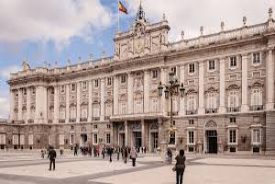
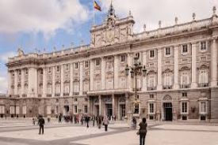

Madrid
A minha cidade é muito linda!!!
Madrid é a capital de Espanha e uma das cidades mais vibrantes da Europa. Conhecida pela sua rica cultura, vida noturna e arquitetura deslumbrante, é o destino ideal para qualquer pessoa interessada em arte e história. Podes ler mais sobre Madrid na Wikipédia.